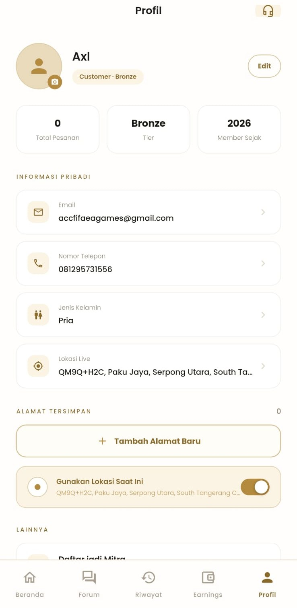
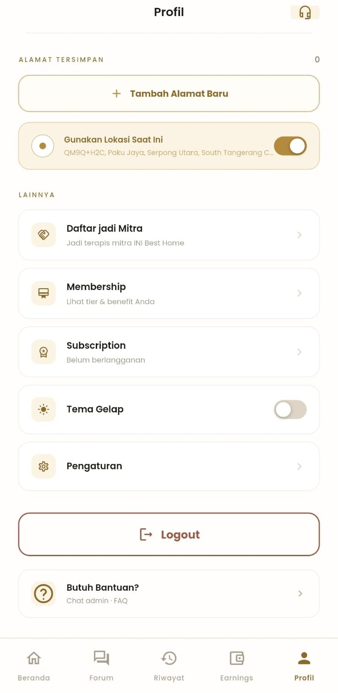

Data yang akan dihapus
Setelah permintaan diverifikasi, empat kelompok data berikut dihapus permanen:
Tutorial hapus akun via aplikasi
Empat langkah untuk menghapus akun langsung dari aplikasi.
-
1
Buka tab Profil

Pastikan Anda sudah login, lalu ketuk ikon Profil di navigasi bawah kanan.
-
2
Buka Pengaturan

Gulir melewati info pribadi dan alamat, lalu ketuk Pengaturan di bagian Lainnya.
-
3
Ketuk Hapus Akun Permanen
PengaturanHapus Akun PermanenIlustrasi · ganti dengan screenshot asliDi halaman Pengaturan, cari dan ketuk menu Hapus Akun Permanen.
-
4
Konfirmasi penghapusan
Hapus Akun? Akun dan seluruh data Anda akan dihapus permanen. BatalYa, HapusBaca peringatan di dialog Hapus Akun?, lalu ketuk Ya, Hapus.
Dialog Akun Terhapus akan muncul. Ketuk Lanjutkan untuk kembali ke halaman login. Penghapusan selesai dan bersifat permanen.
Cara mengajukan penghapusan
Gunakan cara ini jika tidak bisa menghapus dari aplikasi, misalnya karena lupa password atau kendala teknis.
- 1Kirim permintaanLewat WhatsApp resmi, sertakan nama terdaftar, nomor WhatsApp terdaftar, dan alasan (opsional).
- 2Verifikasi identitasTim memastikan Anda pemilik akun dan mungkin meminta detail tambahan.
- 3Proses penghapusanPaling lama 30 hari sejak verifikasi. Selama itu data dinonaktifkan dan dijadwalkan untuk dihapus.
- 4Konfirmasi selesaiDikirim lewat WhatsApp setelah data terhapus. Sejak itu data tidak bisa dipulihkan.
Linimasa proses
-
Hari 1Permintaan diterima.
-
Hari 1–3Verifikasi identitas.
-
Hari 3–30Penghapusan data.
-
Hari 30Konfirmasi dikirim. Data terhapus permanen.
Alternatif sebelum menghapus
- Nonaktifkan akun sementara tanpa menghapus data.
- Minta ekspor data sebagai cadangan.
- Ubah pengaturan privasi atau berhenti menerima promosi.
- Perbaiki data yang keliru daripada menghapusnya.
Hak Anda
- Hak penghapusan akun dan data pribadi.
- Hak portabilitas: mendapatkan salinan data sebelum dihapus.
- Hak menarik persetujuan kapan saja.
- Hak akses dan koreksi data.
Retensi setelah penghapusan
| Jenis data | Perlakuan |
|---|---|
| Profil dan preferensi | Dihapus permanen dalam 30 hari |
| Riwayat WhatsApp | Dihapus permanen dalam 30 hari |
| Catatan transaksi (kewajiban hukum) | Disimpan dan dianonimkan |
| Data analitik agregat | Tidak terkait identitas Anda |
Proses ini mengikuti persyaratan Google Play dan peraturan perlindungan data pribadi di Indonesia. Detail lengkap ada di Kebijakan Privasi.